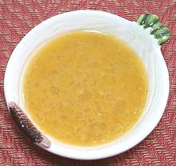

 |
French VinaigretteFrance - Vinaigrette | ||||
| Makes: Effort: Sched: DoAhead: |
1 cup * 10 min Best |
This authentic French Salad Dressing is completely unrelated to American "French Dressing". | |||
|
|
2 1/4 2 1/2 1/4 2/3 |
T c t t t c |
Shallot Wine Vinegar (1) Dijon Mustard Salt Pepper Olive Oil, ExtV |
Make - (10 min)
|